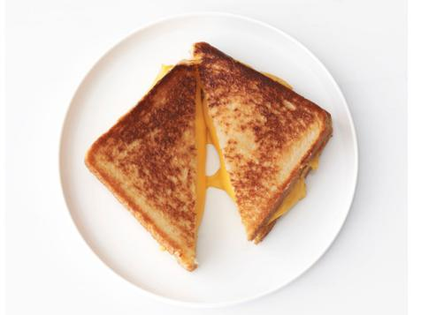

Grilled Cheese

Description
The classic and simple grilled cheese sandwich can be reimagined multiple ways just by changing up the bread and cheese.
Ingredients
- 2 ounces sliced melting cheese (about 2 slices), such as American, Cheddar, muenster, Havarti, Swiss, fontina, Mozzarella, Monterey jack, pepper jack, provolone
- 2 slices bread, such as white, rye, brioche, sourdough, potato, whole wheat, pumpernickel
- 1 tablespoon fat, such as mayonnaise, butter or olive, chili or coconut oil
Steps
- Oven method (great for a crowd of six or fewer): Put a rimmed baking sheet on the middle rack of the oven and preheat to 450 degrees F.
- Make one sandwich per person: Sandwich 2 slices of cheese between 2 slices of bread.
- Spread or brush the outside of the sandwich with 1 tablespoon of fat.
- Place on the preheated baking sheet and cook until the cheese starts to melt, about 5 minutes.
- Flip the sandwich and bake until golden brown, an additional 5 minutes.
- serve